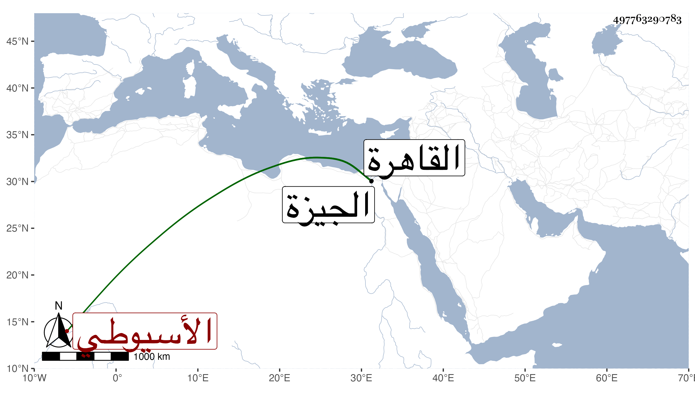

0902Sakhawi.DawLamic.ITO20230111-ara1.EIS1600.497763290783
Biography ID: 497763290783
97
محمد الفخر الأسيوطي أخو الذي قبله . ولد في أواخر سنة اثنتين أو أوائل سنة ثلاث وتسعين وسبعمائة ورأيت وصفه بالخامسة في صفر سنة سبع وتسعين بالقاهرة ونشأ فحفظ القرآن وكتبا وعرض على جماعة وأحضر علي الزين ابن الشيخة وغيره وسمع علي التنوخي وابن أبي المجد والابناسي والعراقي والهيثمي والتقي والنجم الدجويين وسعد الدين القمني والحلاوي والسويداوي والتاج أبي العباس بن الظريف والجمال والزين الرشيديين والفخر عثمان الشيشيني والنجم البالسي وناصر الدين بن الفرات والشهاب بن الناصح والشمس بن الحكار وأبي حيان حفيد أبي حيان والفرسيسي في آخرين ، واشتغل يسيرا وحضر دروس الشمس البرماوي والعز البلقيني وغيرهما وأجلس مع العدول بمراكز متعددة إلى أن مهر في التوثيق ودرب كثيرا من أحكام القضاة بالممارسة وانطبع في ذلك ، وناب عن الجلال البلقيني في سنة اثنتين وعشرين ببعض أعمال الجيزة ثم بالقاهرة عن شيخنا فمن بعده ولكنه لم يرج إلا في أيام شيخنا بسبب انتمائه لولده بحيث جلس عنده للشهادة يسيرا شيخنا ابن خضر ثم ترك والبقاعي ، وبالغ الفخر في الاحسان إليه واشباع جوعته وأسكنه تحت نظره مدة ، وقرأ عليه البقاعي ثم نافره جريا على عادته ، وقد حج مرارا وجاور في بعضها بعض سنة وحدث بأكثر مروياته سمع منه الفضلاء ، حملت عنه أشياء . وكان مقداما عالي الهمة شديد العصبية متوددا لأصحابه كثير الموافاة لهم مذكورا بالمجازفة وعدم التحري . مات في جمادى الثانية سنة سبعين وصلي عليه بجامع الأزهر في مشهد حافل ودفن ظاهر باب المحروق عفا الله عنه .
